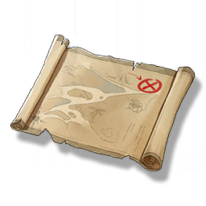

Resonators
Monsters
Weapons
Items
Scratched Photo
Missions

A photo recording the location of the treasure.
A real photo with a back full of scratches, with a mark on the photo, it seems to be in a place in the Tiger's Maw area, maybe you can find some treasure there.